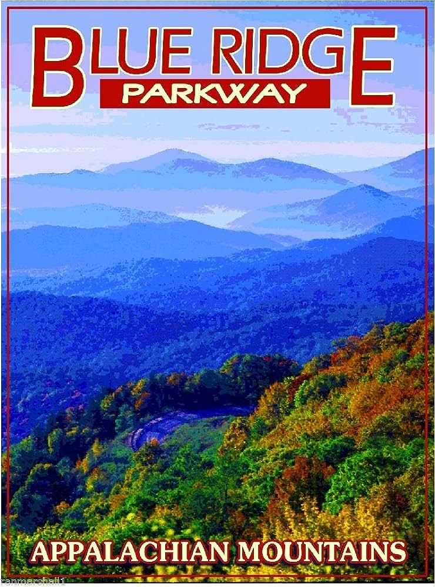

The North Carolina Mountain Region.
The mountain Region is the WesternMost region in North Carolina
Some of the Things that the Mountain Region is most known for are:
Some of the Things that the Mountain Region is most known for are:
- The Blue Ridge Mountains.
The Blue Ridge Mountains are some of the oldest on Earth, being seconded only to the South African Barberton Greenstone Belt.
These mountains have captured human imagination for millennia.
From the Native Americans to Modern-Day writers, artists, and songwriters.
People have been coming to the mountains of North Carolina for generations, simply lured by their stunning awe, and cold, perfect beauty.
The Mountains have been praised for their age, coming in at just over 1 billion years old.
They are popular tourist destinations for the same reason that many North Carolinians visit.
You can hike, mountain bike, and hang-glide over the majestic awe of the Blue Ridge mountains.
One other tourist attraction you can find in the Blue Ridge Mountains is the Blue Ridge Parkway.
The Blue Ridge parkway is known for being one of the largest parkways in America.
With its length reaching to about 470 Miles or about 756 Kilometers there is no shortage of beautiful scenic overlooks along the length of the parkway.

- Boone Mountain
At the top of the Blue Ridge Mountains lies Boone Mountain, also known as Grandfather Mountain.
Sitting at an elevation of over 3266 feet or 995 meters, it is truly a sight to behold.
This is why Boone Is a popular place for people to travel to, It is a popular camping ground that has several activities such as
- Canoeing
- Hiking The Grandfather Mountain.
- Going to any of the many public parks near the campground
- Or eat at some of the Many Restaurants and the such in the area.
- The Climate
- Natural Resources
- Wood
- Minerals
- feldspar
- mica
- pyrophyllite
- Biltmore Estate After you've settled down, One obvious place to go to is Biltmore Estate
The Climate in the Mountain region tends to be a bit cooler than in the rest of the state, And this is due to the nature of the higher elevation of the mountains.
The average temperature is about 66 degrees farenheit in the general mountain region.
The cooler climate is definitely nice, especially for a vacation because it means that you get a break from any potential heat that you will be having elsewhere In the state.
The cooler climate leads to a perfect temperature and experience for camping, Even if there is a little rainfall because the average rainfall in the mountain region is 46-54 inches annually.
camping is one of the main things that the mountain region is known for.
This is because it's the perfect place for it, the cooler temperatures lead for the perfect experience for a campfire.
And combined with all of the attractions around the mountains, It makes for the perfect campgrounds for you and your family.
And, If you were worried about you or your family's safety, You needn't be worried!
Many of the disasters and the such that happen are Hurricanes and severe thunderstorms. So make sure you plan well!
The average temperature is about 66 degrees farenheit in the general mountain region.
The cooler climate is definitely nice, especially for a vacation because it means that you get a break from any potential heat that you will be having elsewhere In the state.
The cooler climate leads to a perfect temperature and experience for camping, Even if there is a little rainfall because the average rainfall in the mountain region is 46-54 inches annually.
camping is one of the main things that the mountain region is known for.
This is because it's the perfect place for it, the cooler temperatures lead for the perfect experience for a campfire.
And combined with all of the attractions around the mountains, It makes for the perfect campgrounds for you and your family.
And, If you were worried about you or your family's safety, You needn't be worried!
Many of the disasters and the such that happen are Hurricanes and severe thunderstorms. So make sure you plan well!
A few of the main natural resources that you can find there are:
Wood Might seem pretty lazy of an answer until you realise just how many trees are on the mountaintops!
Wood is so plentiful in the North Carolina mountains you would think that you aren't even in the mountains at all!
This is actually quite nice, especially if you're camping because the trees can shelter you from the rain and you (If you're allowed to)
could chop down a couple dead trees for some firewood.
Wood is so plentiful in the North Carolina mountains you would think that you aren't even in the mountains at all!
This is actually quite nice, especially if you're camping because the trees can shelter you from the rain and you (If you're allowed to)
could chop down a couple dead trees for some firewood.
The mountain region is rich in a multitude of minerals some of which are:
The mountain region is obviously the main producer in these minerals because the mountains are where you find big rocks.
And this just scratches the surface of how many minerals can be found in the mountain region because more than 300 more types of minerals have been discovered in the mountains in North Carolina.
The mountain region is obviously the main producer in these minerals because the mountains are where you find big rocks.
And this just scratches the surface of how many minerals can be found in the mountain region because more than 300 more types of minerals have been discovered in the mountains in North Carolina.
There is some extremely interesting infrastructure in the mountainous region of North Carolina.
North Carolina's 3600 mile rail track goes through the Appalachian Mountains and is one of the best and simplest ways to travel around this area.
Another super interesting way of travel in a select area in the mountains is riding on pig-back.
Like many other places, there are roads and highways as well that branch off to other big highways and interstates.
Residents in the mountains have some of the highest quality drinking water in the nation.
Workers ensure that the water is as pure and healthy as possible, even going out of their way to make that so.
Almost all internet providers can reach all around the mountains, with good speed too.
The Appalachians of NC have some outstanding and unique ways to get around and the water/power/internet there is also really amazing to top it all off.
Making it an amazing place to settle down or just to visit because c'mon, if given the option, would you not ride a pig?
In conclusion, the Western mountainous region of North Carolina has so many interesting things to do, places to go, such interesting history, and some really astounding infrastructure.
I'm not surprised why so many people go to visit them for vacation and would rather go there instead of the beaches of North Carolina.
North Carolina's 3600 mile rail track goes through the Appalachian Mountains and is one of the best and simplest ways to travel around this area.
Another super interesting way of travel in a select area in the mountains is riding on pig-back.
Like many other places, there are roads and highways as well that branch off to other big highways and interstates.
Residents in the mountains have some of the highest quality drinking water in the nation.
Workers ensure that the water is as pure and healthy as possible, even going out of their way to make that so.
Almost all internet providers can reach all around the mountains, with good speed too.
The Appalachians of NC have some outstanding and unique ways to get around and the water/power/internet there is also really amazing to top it all off.
Making it an amazing place to settle down or just to visit because c'mon, if given the option, would you not ride a pig?
In conclusion, the Western mountainous region of North Carolina has so many interesting things to do, places to go, such interesting history, and some really astounding infrastructure.
I'm not surprised why so many people go to visit them for vacation and would rather go there instead of the beaches of North Carolina.
Popular Attractions:
The Biltmore Estate is famous for being the largest single family owned house ever.
Biltmore is a VERY large house located in Asheville North Carolina, In fact the estate covers over 8,000 acres of land While the house has over 750,000 square ft already!
Construction of the estate started in 1889, and was finally finished in 1895 on christmas eve.
The craziest part of the whole project is that the one who wanted it built didn't even get to enjoy it before he died.